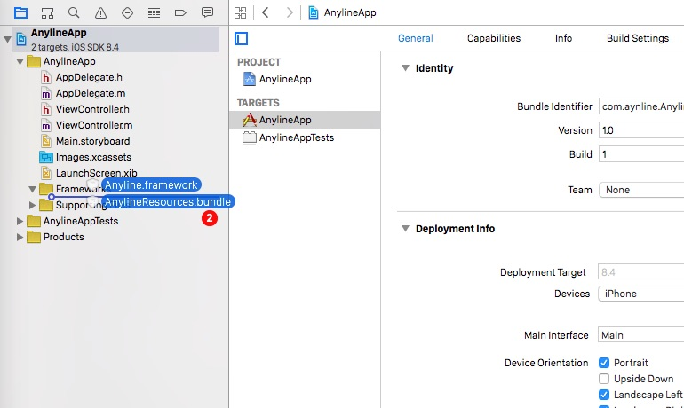
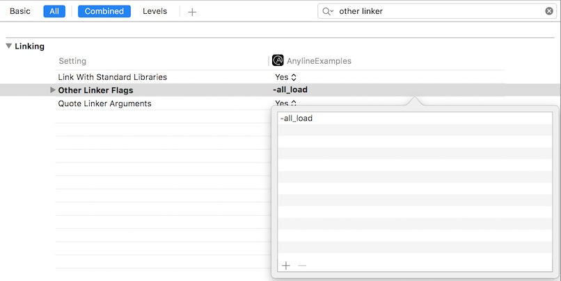

Introduction
Anyline provides an easy-to-use SDK for applications to enable Optical Character Recognition (OCR) on mobile devices. This API contains a Quick Start Guide for all supported platforms, a detailed description for the Anyline Config as well as descriptions and examples for the available Modules.
Supported Platforms
- Android
- iOS
- WP (by Q4 2015)
Available Modules
- Barcode: Scan 16 international barcodes & QR codes.
- Energy: Scan meter readings of various electric and gas meters.
- MRZ: Reliable scanning of data from passports’ and IDs’ machine readable zones (MRZ)
- Custom: Got any other ideas? We will support you when implementing other use cases for mobile OCR technology.
Getting Started
This section contains a a brief description of the files included in SDK bundle as well as a requirement description and a Quick Start Guide for all available platforms.
Android
The Android bundle contains the following parts:
- AnylineSDK: contains the anyline-android-release.aar library
- Documentation: contains the java doc for the anyline-sdk
- AnylineSDKExamples: contains a simple app where an example for each module is implemented - it can be installed right away
- LICENSE: third party license agreements
- README: contains a quick start - setup and module description
Requirements
- Android device with SDK >= 15
- decent camera functionality (recommended: 720p and adequate auto focus)
Quick Start Guide
Add AnylineSDK to the dependencies in build.gradle
//root section of the file
repositories {
flatDir {
dirs 'libs'
}
}
dependencies {
compile(name:'AnyLineSDK', ext:'aar')
//... your other dependencies
}
1. Copy AnylineSDK.aar to your apps “libs” directory and modify the build.gradle as shown in the example.
2. Provide a config file (json or xml)
Example barcode_view_config.json:
{
"captureResolution":"720p",
"cutout": {
"style": "rect",
"maxWidthPercent": "80%",
"alignment": "center",
"ratioFromSize": {
"width": 100,
"height": 80
},
"strokeWidth": 2,
"cornerRadius": 4,
"strokeColor": "FFFFFF",
"outerColor": "000000",
"outerAlpha": 0.3
},
"flash": {
"mode": "manual",
"alignment": "bottom_right"
},
"beepOnResult": true,
"vibrateOnResult": true,
"blinkAnimationOnResult": true,
"cancelOnResult": true
}
The config file enables a quick and easy adaption of the “Scan-View”. You can either provide a json-file or use the XML-attributes in the layout file itself. A detailed description of all available attributes can be found in Anyline Config
JSON
This config file must be located in the assets folder of your Android project.
Some of the most important config options may be:
| Parameter | Description |
|---|---|
| captureResolution | the preferred camera preview size |
| cutout | defining which area of the preview will be “cutout” (analyzed to find bar/QR code) |
| flash | defines the flash mode, where to place the flash symbol, etc. |
| beepOnResult | enables sound on successful scanning process (for modules only) |
| vibrateOnResult | provides haptic feedback for a successful scanning process (for modules only) |
| blinkOnResult | visual feedback for a successful scanning process (for modules only) |
| cancelOnResult | if true, the scanning process will be stopped after one result and needs to be restarted manually (for modules only) |
XML
<RelativeLayout
xmlns:android="http://schemas.android.com/apk/res/android"
xmlns:app="http://schemas.android.com/apk/res-auto"
android:layout_width="match_parent"
android:layout_height="match_parent">
<at.nineyards.anyline.modules.energy.EnergyScanView
android:id="@+id/energy_scan_view"
android:layout_width="match_parent"
android:layout_height="match_parent"
app:cutout_alignment="top"
app:cutout_style="rect"
app:cutout_outside_color="#55000000"
app:cutout_offset_y="120"
app:cutout_rect_corner_radius_in_dp="4"
app:cutout_stroke_width_in_dp="2"
app:cutout_stroke_color="#FFFFFF"
app:flash_mode="manual"
app:flash_alignment="bottom_right"
app:beep_on_result="true"
app:vibrate_on_result="true"
app:blink_animation_on_result="true"
app:cancel_on_result="true"
/>
</RelativeLayout>
Alternatively to a json config, it is also possible to configure the view (EnergyScanView, MrzScanView, BarcodeScanView) using XML-attributes in the layout-file.
3. Init Anyline in your Activity
There are module specific options - take a look at the description of the desired module to get more detailed information.
4. Enjoy scanning and have fun :)
iOS
- Framework: contains the Anyline.framework & AnylineResources.bundle
- Documentation: contains a html & docset version of an appledoc style interface documentation
- AnylineExamples: contains a simple app where each module is implemented - it can be installed right away
- LICENSE: third party license agreements
- README: containing a quick start - setup and module description
- RELEASE_NOTES
Requirements
- minimum iOS 7.0
- minimum iPhone4s
Quick Start - Setup
1. Import the files
Simply drag & drop Anyline.framework & AnylineResources.bundle into your project tree. 
In the import screen select Copy items if needed and Create groups and add the files to your target.

2. Linking Frameworks
After the framework and bundle got imported go to your project inspector. In the Build Phases tab, add the following libraries:
- libc++.dylib
- libstdc++.6.0.9.dylib
- libiconv.dylib
- AssetsLibrary.framework
After adding the libraries, it should look like this (notice the AnylineResources bundle, if its not in Copy Bundle Resources add it):

3. Linker Flags
In your project inspector switch to the Build Settings tab and search for Other Linker Flags. Select Other - Other Linker Flags and add - ObjC. This flag causes the linker to load every object file in the library that defines an Objective-C class or category.

4. Init an AnylineModuleView in your ViewController or Storyboard
There are module specific options - take a look at the description of the desired module to get more detailed information.
5. Enjoy scanning and have fun :)
Anyline Config
With the config file the views can be configured in regard of position and looks of the cutout used for scanning as well as the behavior of flash and feedback mechanisms for scanning. This section contains a detailed description of the configurable items as well as two distinct ways for each platform to set up and configure the view.
Item description
{
"captureResolution": "720p",
"cutout": {
"style": "rect",
"width": 540,
"maxWidthPercent": "80%",
"maxHeightPercent": "80%",
"alignment": "center",
"image":"Overlay",
"ratioFromSize": {
"width": 125,
"height": 85
},
"strokeWidth": 2,
"strokeColor": "FFFFFF",
"cornerRadius": 4,
"offset": {
"x": 0,
"y": 0
},
"cropPadding": {
"x": 0,
"y": 0
},
"cropOffset": {
"x": 0,
"y": 0
},
"outerColor": "000000",
"outerAlpha": 0.3
},
"flash": {
"mode": "manual",
"alignment": "bottom_right",
"imageOn": "ic_flash_on",
"imageOff": "ic_flash_off",
"imageAuto": "ic_flash_auto"
},
"beepOnResult": false,
"vibrateOnResult": true,
"blinkAnimationOnResult": true,
"cancelOnResult": true
}
- captureResolution String
- cutout
- width int
- maxWidthPercent String
- maxHeightPercent String
- ratioFromSize
- alignment String
- offset
- outerColor Hex-String - format: RRGGBB
- outerAlpha float
- style String
- strokeColor Hex-String - format: RRGGBB
- strokeWidth int
- cornerRadius int
- image String
- cropPadding
- cropOffset
- flash
- beepOnResult boolean
- vibrateOnResult boolean
- blinkAnimationOnResult boolean
- cancelOnResult boolean
captureResolution
The resolution of the preview frame.
Possible values:
| value | description |
|---|---|
| 1080p | use 1920x1080 as preferred preview size |
| 720p | use 1280x720 as preferred preview size |
| 480p | use 480x854 as preferred preview size |
- The p is optional.
- The defined capture resolution is just the preferred resolution. If this resolution is not available the resolution that best fits inside the desired resolution should be used.
cutout
This contains all the settings for the overlay/cutout.
width
Specifies an exact desired pixel width (pixels in the frame, not on the display). If this is bigger than the width of the view, it will be limited to it.
E.g. Android devices may have a 720p preview but only a 540p wide display. If a width of 600 is specified, the cutout will still only be 540.
- Type: int
- Default: none
maxWidthPercent
Specifies the maximum width of the cutout in percent.
This is the desired width if ‘width’ parameter is not used.
- Type: String
- Format: ###%
- Range: 1% - 100%
- Default: 100%
maxHeightPercent
Specify the maximum height of the cutout in %.
- Type: String
- Format: ###%
- Range: 1% - 100%
- Default: 100%
ratioFromSize
The ratio of the cutout can be defined by just setting this parameters width and height to the size of the real object that should be scanned.
E.g. width = 100 height = 50 is the same as width = 200 height = 100, because only the ratio matters here.
- Type of width and height: int
- Default ratio: 1 (width = 1, height = 1)
alignment
The alignment of the cutout.
Possible values:
| value | description |
|---|---|
| top | upper border of the cutout is at the upper border of the view |
| top_half | offsetY = (viewHeight - cutoutHeight) / 3 |
| center | cutout is centered in the view vertically and horizontally |
| bottom | lower border of the cutout is at the lower border of the view |
| bottom_half | the same as top half just from below: offsetY = (viewHeight - cutoutHeight) / 3 * 2 |
offset
Move the cutout in x and y direction by the specified pixel value.
Put negative values to move left or up, positive values to move right or down.
The offset is limited to move the cutout to the start/end of the view.
- Type: int (pixel value = pixels in the frame, not on the display)
outerColor
The color of the area outside the cutout.
- Type: Hex-String
- Format: RRGGBB
outerAlpha
The alpha value for the color outside of the cutout.
- Type: float
- Range: 0-1
- 0 = view is completely transparent
- 1 = view is completely opaque
style
The type of the cutout.
| style | description | related parameters |
|---|---|---|
| rect | a rectangle is drawn around the cutout-area | strokeWidth, strokeColor, cornerRadius |
| image | a given image is drawn inside the cutout-area (resized to fit) | image |
strokeColor
The color of the stroke (used by rect or vector style).
- Type: Hex-String
- Format: RRGGBB
strokeWidth
The thickness of the stroke in a display independent unit
- Type: int (density-independent pixel dp)
cornerRadius
The radius to round the corners of the rect (only used if type is rect).
- Type: int (density-independent pixel dp)
image
The name of the image resource (only used if type is image).
- Type: String
cropPadding
Adapts the size of the cropped area from the frame. It changes the visible cutout width and height by the x or y padding.
Positive values mean that the crop will be smaller than the cutout. Negative values mean that the crop will be bigger than the cutout.
The padding is all around the cutout so cropWidth = cutoutWidth - 2 * xPadding.
This should only be used in combination with a fixed width (which also fits on all supported devices), because this is a fixed value that will not be adjusted to anything.
- Type: int (pixel value)
cropOffset
Move the part that is cropped out of the frame away from the visible cutout by the x and y.
Negative values to move left or up, positive values to move right or down.
This should only be used in combination with a fixed width (which also fits on all supported devices), because this is a fixed value that will not be adjusted to anything.
- Type: int (pixel value)
flash
Settings for a simple view that provides flash functionality.
mode
Default images for flash on/off/auto are provided.
Possible values:
| mode | description |
|---|---|
| none | flash view is not used and not visible |
| manual | flash can be toggled manually (default is off) |
| auto | flash view also has an automatic option. But it is still required to tell the view when it should turn on the flash in auto mode. (Except for use-cases where additional abstraction is provided like the Energy-Module) |
alignment
The alignment of the flash view.
| alignment | meaning |
|---|---|
| top | at the top centered horizontally |
| top_left | at the top left corner |
| top_right | at the top right corner |
| bottom | at the bottom centered horizontally |
| bottom_left | at the bottom left corner |
| bottom_right | at the bottom right corner |
imageOn
The name of the custom image resource to show when the flash is on.
The image will not be resized and should be provided in an appropriate size.
- Type: String
imageOff
The name of the custom image resource to show when the flash is off.
The image will not be resized and should be provided in an appropriate size.
- Type: String
imageAuto
The name of the custom image resource to show when the flash is in auto mode.
The image will not be resized and should be provided in an appropriate size.
- Type: String
Special options for Modules
Modules can use these additional options to configure some things that should happen when a result was found.
beepOnResult
True, if there should be a beep when a result is found.
- Type: boolean
vibrateOnResult
True, if there should be a vibration alarm when a result is found.
- Type: boolean
blinkAnimationOnResult
True, if the view should display a short flash of white when a result is found.
- Type: boolean
cancelOnResult
True, if the scanning process should be canceled when a result is found (=default setting).
Set to false if multiple things should be scanned immediately after each other. If another scan may be required later, leave this value true and just restart the scanning process later
- Type: boolean
- Default: true (cancel scanning when result is found)
Android Config
There are two ways to configure the look and behavior of the scan view in Android.
1. Configuration via json
The view can be configured using a json config file like seen above in the item description. This file must be located in the assets folder of your Android project.
2. Configuration via XML
Where app is xmlns:app=“http://schemas.android.com/apk/res-auto”
app:preferred_preview_width="720"
app:preferred_preview_height="1280"
app:cutout_alignment="top"
app:cutout_style="rect"
app:cutout_outside_color="#55000000"
app:cutout_offset_x="0"
app:cutout_offset_y="160"
app:cutout_crop_padding_x="0"
app:cutout_crop_padding_y="0"
app:cutout_crop_offset_x="0"
app:cutout_crop_offset_y="0"
app:cutout_width="540"
app:cutout_max_width_percent="90"
app:cutout_max_height_percent="90"
app:cutout_ratio_from_size_width="540"
app:cutout_ratio_from_size_height="98"
app:cutout_rect_corner_radius_in_dp="4"
app:cutout_stroke_width_in_dp="2"
app:cutout_stroke_color="#FFFFFF"
app:flash_mode="manual"
app:flash_alignment="bottom_right"
app:flash_image_on="@drawable/flash_icon"
app:flash_image_off="@drawable/flash_icon_off"
app:flash_image_auto="@drawable/flash_icon_auto"
app:beep_on_result="true"
app:vibrate_on_result="true"
app:blink_animation_on_result="true"
app:cancel_on_result="true"
The configuration can also be done via xml instead of json.
A list of of all available xml options can be found in the example.
Differences to json
- tree is “flattened” and snake_case
- captureResolution is defined by preferred_preview_width and preferred_preview_height
- colors contain alpha value, so there is no extra option for alpha
iOS Config
There are two methods to add the view for the models available.
1. Configure in Code
The view exposes the following properties:
| value | description |
|---|---|
| strokeWidth | sets the width of the views border |
| strokeColor | sets the color of the views border |
| cornerRadius | sets the corner radius of the views border |
| outerColor | sets the color of the space surrounding the view |
| outerAlpha | sets the alpha of the space surrounding the view |
| flashImage | sets image used to toggle the flash |
| flashButtonAlignment | sets the alignment of the flash button |
| flashStatus | flag to check the status of the flash |
| cancelOnResult | true, if Anyline should stop scanning once a result was found |
| beepOnResult | true, if there should be a beep when a result was found |
| blinkOnResult | true, if there should be a blinking alarm when a result was found |
| vibrateOnResult | true, if there should be a vibration alarm when a result was found |
flashButtonAlignment
specifies the alignment of the flash button
Possible values:
| alignment | description |
|---|---|
| ALFlashAlignmentTop | aligned at top, centered horizontally |
| ALFlashAlignmentTopLeft | aligned at top left corner |
| ALFlashAlignmentTopRight | aligned at top right corner |
| ALFlashAlignmentBottom | aligned at bottom, centered horizontally |
| ALFlashAlignmentBottomLeft | aligned at bottom left corner |
| ALFlashAlignmentBottomRight | aligned at bottom right corner |
2. Configure with Storyboards
- Select View from the object library
- Drag it onto the view of your view controller
- Change the class to the name of the module you want to use (AnylineBarcodeModuleView, AnylineMRZModuleView, AnylineEnergyModuleView)
Changing the appearance
The appearance of the view can be changed in the attributes inspector.

Creating the property
Module Outlet
@interface MainViewController : UIViewController
@property (weak, nonatomic) IBOutlet AnylineBarcodeModuleView *moduleView;
@end
Define the outlet of the view in the interface of the view controller.
Connecting the module view to your view controller
Drag the connector of you property to the newly created view.
Modules
The Anyline-Modules are use-case specific abstractions for Anyline. Each module is designed to serve a specific purpose. Currently, the following modules are available:
Barcode
With the Anyline Barcode-Module 16 different kinds of bar- and QR-codes can be scanned. The result will simply be a string representation of the code.
Restrictions for the Barcode-Module Config:
- Flash mode auto is still in alpha stage therefore manual mode is preferred
Available Barcode Formats:
- AZTEC
- CODABAR
- CODE_39
- CODE_93
- CODE_128
- DATA_MATRIX
- EAN_8
- EAN_13
- ITF
- PDF_417
- QR_CODE
- RSS_14
- RSS_EXPANDED
- UPC_A
- UPC_E
- UPC_EAN_EXTENSION
Android
Example
The following example files illustrate a simple use-case of the barcode module.
Example Activity
barcodeScanView = (BarcodeScanView) findViewById(R.id.barcode_scan_view);
barcodeScanView.setConfigFromAsset("barcode_view_config.json");
// initialize Anyline with your license key and a Listener that is called if a result is found
barcodeScanView.initAnyline(ANYLINE_LICENSE, new BarcodeResultListener() {
@Override
public void onResult(String result) {
// This is called when a result is found.
}
});
barcodeScanView.startScanning();
There are three simple steps necessary to get started:
- If you do not use XML configuration set the config-file to your BarcodeScanView using the setConfigFromAsset method and make sure that the json config-file is located in the Android assets folder.
- Call initAnyline with your valid license key and a new instance of BarcodeResultListener, which can be used to handle the bar/QR code results.
- Call startScanning()
// limit the barcode scanner to QR codes or CODE_128 codes
barcodeScanView.setBarcodeFormats(BarcodeScanView.BarcodeFormat.QR_CODE, BarcodeScanView.BarcodeFormat.CODE_128);
In an optional step, you can limit the barcode scanning to one or multiple barcode formats with setBarcodeFormats(BarcodeScanView.BarcodeFormat…);
Example Activity Layout
<RelativeLayout
xmlns:android="http://schemas.android.com/apk/res/android"
android:layout_width="match_parent"
android:layout_height="match_parent">
<at.nineyards.anyline.modules.barcode.BarcodeScanView
android:id="@+id/barcode_scan_view"
android:layout_width="match_parent"
android:layout_height="match_parent"/>
</RelativeLayout>
The BarcodeScanView can simply be included in the activity layout file, just like any other view. The view can be either configured here via XML or otherwise a config json file can be used to adapt the scan view.
Example config for the Barcode Module
{
"captureResolution":"720p",
"cutout": {
"style": "rect",
"maxWidthPercent": "80%",
"alignment": "center",
"ratioFromSize": {
"width": 100,
"height": 80
},
"strokeWidth": 2,
"cornerRadius": 4,
"strokeColor": "FFFFFF",
"outerColor": "000000",
"outerAlpha": 0.3
},
"flash": {
"mode": "manual",
"alignment": "bottom_right"
},
"beepOnResult": true,
"vibrateOnResult": true,
"blinkAnimationOnResult": true,
"cancelOnResult": true
}
The config file enables a quick and easy adaption of the scan view.
Some of the most important config options may be:
| Parameter | Description |
|---|---|
| captureResolution | the preferred camera preview size |
| cutout | defining which area of the preview will be “cutout” (analyzed to find bar/QR code) |
| flash | defines the flash mode, where to place the flash symbol, etc. |
| beepOnResult | enables acoustic feedback on successful scan |
| vibrateOnResult | haptic feedback on successful scan |
| blinkOnResult | visual feedback on successful scan |
| cancelOnResult | true, if the scanning process should be stopped after one result; needs manual restart for additional scans |
A detailed description of all available config items can be found in Anyline Config
It is also possible to use xml-attributes instead of the json config file. For more detailed information see XML Configuration
iOS
There are three steps necessary to get a scan result:
1. Initialize the module in viewDidLoad
- (void)viewDidLoad {
self.barcodeModule = [[AnylineBarcodeModuleView alloc] initWithFrame:CGRectMake(0, 0, 640, 640)];
[self.view addSubview:self.barcodeModule];
BOOL success = [self.barcodeModule setupWithLicenseKey:kMyLicenseKey delegate:self error:&error];
if( !success ) {
// Handle the error here
}
[self.barcodeModule setBarcodeFormats:@[kCodeTypeEAN8, kCodeTypeEAN13, kCodeTypeQR]]
}
Create a property, initialize the module in the viewDidLoad method and add it to the view of the view controller. Supply the license key and set the delegate, which will receive a call once a result is found. The boolean returned by the setup routine notifies you if the Anyline set up was successful. If an error occurred the error needs to be handled. If the setup was successful, set the barcode types that should be scanned.
Valid types are:
- kCodeTypeAztec
- kCodeTypeCodabar
- kCodeTypeCode39
- kCodeTypeCode93
- kCodeTypeCode128,
- kCodeTypeDataMatrix
- kCodeTypeEAN8
- kCodeTypeEAN13
- kCodeTypeITF
- kCodeTypePDF417
- kCodeTypeQR,
- kCodeTypeRSS14
- kCodeTypeRSSExpanded
- kCodeTypeUPCA
- kCodeTypeUPCE
- kCodeTypeUPCEANExtension
2. Start the scanning process in viewDidAppear
- (void)viewDidAppear:(BOOL)animated {
[super viewDidAppear:animated];
NSError *error;
BOOL success = [self.barcodeModule startScanningAndReturnError:&error];
NSAssert(success, @"Start failed: %@",error.debugDescription);
if( !success ) {
// Handle the error here
}
}
Once Anyline is set up successful, start the scanning process in viewDidAppear. If there is a problem starting the scanning process an error object will be set, so the error can be handled.
3. Implement the delegate method and receive results
- (void)anylineBarcodeModuleView:(AnylineBarcodeModuleView *)anylineBarcodeModuleView
didFindScanResult:(NSString *)scanResult
atImage:(UIImage *)image {
NSLog("Scan result: %@", scanResult);
}
When a valid result is found, it will call the delegate. The scan result will be a string containing the scanned code.
Energy
The Anyline Energy-Module is capable of scanning analog electric- and gas-meter-readings. It is also possible to scan bar- and QR-codes (useful for identifying meters).
For each successful scan, you will receive four result-attributes:
- scanMode: the mode the result belongs to (gas, electric, barcode)
- result: the detected value as a String
- resultImage:
- scanMode = meter: the cropped image that has been used to scan the meter value
- scanMode = code: null
- fullImage:
- scanMode = meter: the full image (before cropping)
- scanMode = code: null
Android
Restrictions for the Energy-Module Config
- Capture resolution is currently fixed to 720p on Android (optimized for good results on as many devices as possible).
- The size and ratio of the cutout is predefined and cannot be changed (sizes are optimized for best results)
- The cutout should be placed fairly high (use alignment top and a small y offset), because this reduces reflections considerably when used with flash.
- Flash mode auto is still in alpha stage therefore manual mode is preferred
Example
The following example files illustrate a simple use-case of the energy module.
Example Activity
energyScanView = (EnergyScanView) findViewById(R.id.energy_scan_view);
// set the scan mode to start with
energyScanView.setScanMode(EnergyScanView.ScanMode.ELECTRIC_METER);
// initialize Anyline with your license key and a Listener that is called if a result is found
energyScanView.initAnyline(ANYLINE_LICENSE, new EnergyResultListener() {
@Override
public void onResult(EnergyScanView.ScanMode scanMode, String result,
AnylineImage resultImage, AnylineImage fullImage) {
// This is called when a result is found.
// The scanMode is the mode the result was found for. The result is the actual result.
// If the a meter reading was scanned two images are provided as well, one shows the targeted area only
// the other shows the full image. (Images are null in barcode mode)
// The result for meter readings is a String with leading zeros (if any) and no decimals.
}
});
energyScanView.startScanning();
In order to start the scan process, perform the following steps:
- If you prefer a json-file for configuration, use the setConfigFromAsset method and place the json-config in the Android assets folder, otherwise configure the view using the xml attributes in the activity layout file.
- Set the scan mode; available are: ELECTRIC_METER, GAS_METER, BAR_CODE
- Call initAnyline with your valid license key and a new instance of EnergyResultListener, which is the callback for handling the results
- Call startScanning()
Example Activity Layout
<RelativeLayout
xmlns:android="http://schemas.android.com/apk/res/android"
xmlns:app="http://schemas.android.com/apk/res-auto"
android:layout_width="match_parent"
android:layout_height="match_parent">
<at.nineyards.anyline.modules.energy.EnergyScanView
android:id="@+id/energy_scan_view"
android:layout_width="match_parent"
android:layout_height="match_parent"
app:cutout_alignment="top"
app:cutout_style="rect"
app:cutout_outside_color="#55000000"
app:cutout_offset_y="120"
app:cutout_rect_corner_radius_in_dp="4"
app:cutout_stroke_width_in_dp="2"
app:cutout_stroke_color="#FFFFFF"
app:flash_mode="manual"
app:flash_alignment="bottom_right"
app:beep_on_result="true"
app:vibrate_on_result="true"
app:blink_animation_on_result="true"
app:cancel_on_result="true"
/>
</RelativeLayout>
The EnergyScanView can simply be included in the activity layout.
For custom configuration (e.g. cutout, flash, feedback on successful scan, etc.) you can either use a json-file or XML-attributes like in the example. If you need more detailed information about all available config items see Anyline Config.
iOS
Restrictions for the Energy-Module Config:
- Flash mode auto is still in alpha stage therefore manual mode is preferred
Example
In order to get scan results, it is necessary to perform the following three steps:
1. Initialize the module in viewDidLoad
- (void)viewDidLoad {
self.energyModule = [[AnylineEnergyModuleView alloc] initWithFrame:CGRectMake(0, 0, 640, 640)];
[self.view addSubview:self.energyModule];
BOOL success = [self.energyModule setupWithLicenseKey:kMyLicenseKey delegate:self error:&error];
if( !success ) {
// Handle the error here
}
[self.energyModule setScanMode:ALElectricMeter];
}
Create a property, initialize the module and add it to the view of our view controller. Afterwards, supply the license key and set the delegate. The delegate will receive a call when a result is found. If the Anyline set up returned an error the error object will be set and you can handle the error. Furthermore it is necessary to set the scan mode utilizing setScanMode.
Possible values:
- ALElectricMeter
- ALGasMeter
- ALBarcode
- ALSerialNumber
2. Start the scanning process in viewDidAppear
- (void)viewDidAppear:(BOOL)animated {
[super viewDidAppear:animated];
NSError *error;
BOOL success = [self.energyModule startScanningAndReturnError:&error];
NSAssert(success, @"Start failed: %@",error.debugDescription);
if( !success ) {
// Handle the error here
}
}
If there is an error staring the scanning process the error object will be set and you can handle the error.
3. Implement the delegate method and receive results
- (void)anylineEnergyModuleView:(AnylineEnergyModuleView *)anylineEnergyModuleView
didFindScanResult:(NSString *)scanResult
cropImage:(UIImage *)image
fullImage:(UIImage *)fullImage
inMode:(ALScanMode)scanMode; {
NSLog("Scan result: %@", scanResult);
}
Once Anyline has found a valid result the delegate is called and you get an result object with four result attributes.
- scanMode: the mode the result belongs to
- scanResult: the detected value as string
- image:
- scanMode = meter: the cropped image that has been used to scan the meter value
- scanMode = code: null
- fullImage:
- scanMode = meter: the full image (before cropping)
- scanMode = code: null
MRZ
The Anyline MRZ-Module provides the functionality to scan passports and other IDs using the MRZ (Machine Readable Zone).
For each scan result the module generates an identification object, containing all relevant information as well as the image of the scanned document.
| value | description |
|---|---|
| expirationDate | expiration date of the document |
| dob | date of birth |
| checkDigitDob | check digit for the date of birth |
| checkDigitExpiration | check digit for the expiration date |
| code | country code |
| surname | surname |
| givenNames | all given first names |
| checkDigitDates | check digit for both dates |
| type | type of the document that was read. (ID/P) |
| checkDigitNumber | check digit for the document number |
| checkDigitFinal | check digit |
| sex | gender of the person |
Android
Restrictions for the MRZ-Module Config:
- The ratio of the cutout cannot be changed and is predefined to fit passports and IDs well.
- Flash mode auto is still in alpha stage therefore manual mode is preferred
Example
The following example files illustrate a simple use-case of the MRZ module.
Example Activity
mrzResultView = (MrzScanView) findViewById(R.id.mrz_result);
mrzScanView.setConfigFromAsset("mrz_view_config.json");
// initialize Anyline with your license key and a Listener that is called if a result is found
mrzScanView.initAnyline(ANYLINE_LICENSE, new MrzResultListener() {
@Override
public void onResult(Identification mrzResult, AnylineImage anylineImage) {
// This is called when a result is found.
// The Identification includes all the data read from the MRZ
// as scanned and the given image shows the scanned ID/Passport
}
});
mrzScanView.startScanning();
There are three simple steps necessary to get started:
- If you do not use XML configuration set the config-file to your MrzScanView using the setConfigFromAsset method and make sure that the json config-file is located in the Android assets folder
- Call initAnyline with your valid license key and a new instance of MrzResultListener, which will be used as callback for each successful scan.
- Call startScanning()
Example Activity Layout
<RelativeLayout
xmlns:android="http://schemas.android.com/apk/res/android"
xmlns:tools="http://schemas.android.com/tools"
android:layout_width="match_parent"
android:layout_height="match_parent">
<at.nineyards.anyline.modules.mrz.MrzScanView
android:id="@+id/mrz_view"
android:layout_width="match_parent"
android:layout_height="match_parent"/>
</RelativeLayout>
The MrzScanView can simply be included in the activity layout file, just like any other view. The view can be either configured via XML or with a config json.
Example config for the MRZ Module
{
"captureResolution":"1080p",
"cutout": {
"style": "rect",
"maxWidthPercent": "90%",
"maxHeightPercent": "90%",
"alignment": "top_half",
"strokeWidth": 2,
"cornerRadius": 4,
"strokeColor": "FFFFFF",
"outerColor": "000000",
"outerAlpha": 0.3
},
"flash": {
"mode": "manual",
"alignment": "bottom_right"
},
"beepOnResult": true,
"vibrateOnResult": true,
"blinkAnimationOnResult": true,
"cancelOnResult": true
}
A detailed description of all available config items can be found in Anyline Config
It is also possible to use xml-attributes instead of the json config file. For more detailed information see XML Configuration
iOS
Restrictions for the MRZ-Module Config:
- Flash mode auto is still in alpha stage therefore manual mode is preferred
Example
There are three steps necessary to get a scan result:
1. Initialize the module in viewDidLoad
- (void)viewDidLoad {
self.mrzModule = [[AnylineMRZModuleView alloc] initWithFrame:CGRectMake(0, 0, 640, 640)];
[self.view addSubview:self.mrzModule];
BOOL success = [self.mrzModule setupWithLicenseKey:kMyLicenseKey delegate:self error:&error];
if( !success ) {
// Handle the error here
}
}
Create a property, initialize the module in the viewDidLoad method and add it to the view of the view controller. Supply the license key and set the delegate, which will receive a call once a result is found. The boolean returned by the setup routine notifies you if the Anyline set up was successful. If an error occurred the error needs to be handled.
2. Start scanning process in viewDidAppear
- (void)viewDidAppear:(BOOL)animated {
[super viewDidAppear:animated];
NSError *error;
BOOL success = [self.mrzModule startScanningAndReturnError:&error];
NSAssert(success, @"Start failed: %@",error.debugDescription);
if( !success ) {
// Handle the error here
}
}
If there is a problem starting the scanning process an error object will be set, so the error can be handled.
3. Implement the delegate method and receive results
- (void)anylineMRZModuleView:(AnylineMRZModuleView *)anylineMRZModuleView
didFindScanResult:(ALIdentification *)scanResult
atImage:(UIImage *)image; {
NSLog("Scan result: %@", scanResult);
}
When a valid result is found, it will call the delegate. ScanResult is an object of type ALIdentification containing the information scanned.